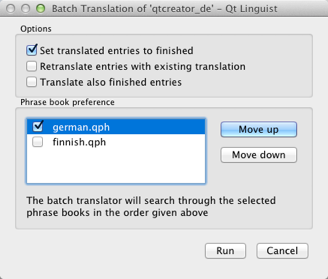
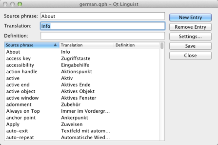

Reusing translations
If the translated text is similar to the source text, select Translation > Copy from source text (or press Ctrl+B) to copy the source text into the translation area.
Phrase books provide a common set of translations to help ensure consistency. A phrase book is a set of source phrases, target (translated) phrases, and optional definitions. Typically, one phrase book is created per language and family of applications. Phrase books avoid duplication of effort since they contain translations for a family of applications.
The Phrases and guesses view displays the current string and its phrase book translations. If the current string is the same as or similar to a translated string, the view also lists the string and its translation.
To copy a translation from the Phrases and guesses view to the translation area, double-click it or select it and press Enter.
Batch translation

Use the batch translation feature to automatically translate source texts that are also in a phrase book. To configure which phrase books to use in what order during the batch translation process, select Edit > Batch Translation. You can include only entries with no current translation and mark batch translated entries as Accepted.
Creating and editing phrase books
Phrase book files are human-readable XML files containing standard phrases and their translations. Qt Linguist creates and update the files. You can use them for any number of projects and applications.
To create a new phrase book, select Phrases > New Phrase Book.

To open a phrase book, select Phrases > Open Phrase Book, and then select the Qt phrase book file (.qph) to open.
To view and change open phrase books, select Phrases > Edit Phrase Book.
To add a new phrase, select New Entry (or press Alt+N) and type in a new source phrase, the translation, and an optional definition. This is useful to distinguish different translations of the same source phrase.
To add the translation you are working on to the current phrase book, select Phrases > Add to Phrase Book or press Ctrl+T. If multiple phrase books are loaded, you have to select one.
If you detect an error in a phrase book entry in the Phrases and guesses view, you can edit by right clicking it and selecting Edit. After fixing the error press Enter to leave the editing mode.
To delete a phrase, select it in the Source phrase list, and then select Remove Entry.
To print an open phrase book, select Phrases > Print Phrase Book.